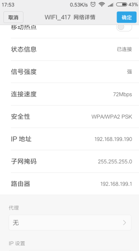

近期在Android Studio上安装了ADB WIFI插件，发现还是不好使，因为每次连接时候需要用到USB连接一次才能断开使用wifi调试，最后在segamentfault上找到了可以直接用adb命令就可以直接通过wifi连接手机进行app调试。
第一步
首先需要将手机连接到跟PC同一个局域网下，通过查看信息，知道手机当前的IP地址

第二步
通过adb connect [ Your IP Address ] 即可连接到手机
Tips: 可以通过adb devices命令进行验证是否连接手机
第三步
可以像USB调试一样，调试Android应用